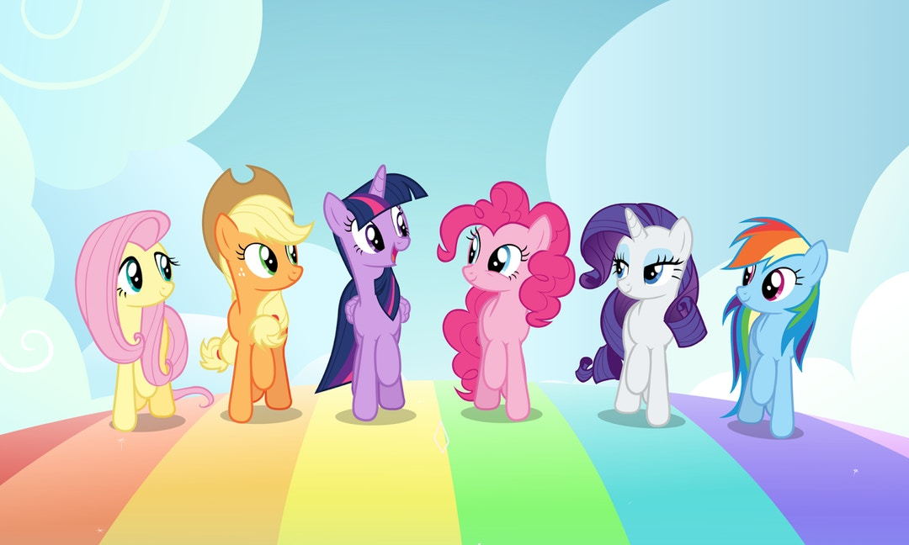

News
new discovery

[傻眼] 高雄大淹水 韓國瑜明卻北上「拜會大老」 網轟爆
2019/7/21
Wanjiun Liao received the BS and MS degrees in Computer Science from National Chiao Tung University, Taiwan, in 1990 and 1992, respectively, and the Ph.D. degree in Electrical Engineering from the University of Southern California, Los Angeles, California, USA, in 1997. She is a Distinguished Professor of Electrical Engineering, National Taiwan University (NTU), Taipei, Taiwan. She is an Adjunct Research Fellow of Research Center for Information Techonology Innovation, Amercian Sinica, Taiwan. She is the General Director of Engineering Division in the Ministry of Science and Technology in Taiwan. Her research interests are focused on the design and analysis of wireless and multimedia networking, green communications, on-line social network analysis, and cloud networking.
Prof. Liao was an Associate Editor of IEEE Transactions on Wireless Communications and IEEE Transactions on Multimedia, and served on the organizing committees of many international conferences. She was an IEEE Communications Society (ComSoc) Distinguished Lecturer, an IEEE Fellow Committee member, and the IEEE ComSoc Asia Pacific Board (APB) Director. She is on IEEE Award Board Award Review Committee and IEEE Transac
[???] 壓倒性勝出 韓國瑜：心中沒有一絲一毫的喜悅
2019/7/15
國民黨今天公布總統初選民調結果，高雄市長韓國瑜以44.80％的支持率壓倒性的勝出。韓國瑜今出席民調結果公布記者會，他表示，自己勝出，心中沒有一絲一毫的喜悅和歡樂，只感到無比沉重的壓力。希望承擔這樣的責任，可以得到更多朋友的幫忙，一起來開創台灣更多美好的未來，一起幫台灣子孫萬代開闢更燦爛的道路。
韓國瑜表示，他心中有萬千的感謝，感謝這些庶民朋友、基層大眾，各為好朋友守電話，不離不棄的幫助韓國瑜。也感謝主席吳敦義這段時間的忍辱負重，以及黨中央辦理公平公開的初選，非常的不容易。
